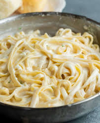

Olive Garden Alfredo Sauce

Description
Supposed original Olive Garden Alfredo Sauce recipe.
Ingredients
3 oz butter
1 tablespoon garlic
2 tablespoons all purpose flour
1 1/2 cup milk
1 1/2 cup heavy cream
1/2 cup Parmesan cheese
1/2 cup Romano cheese
Salt and pepper to taste
Steps
- Combine butter and garlic in sauce pan. Sautee over medium heat for one minute
- Add all purpose flour
- Add milk and heavy cream
- Add Parmesan and Romano cheese